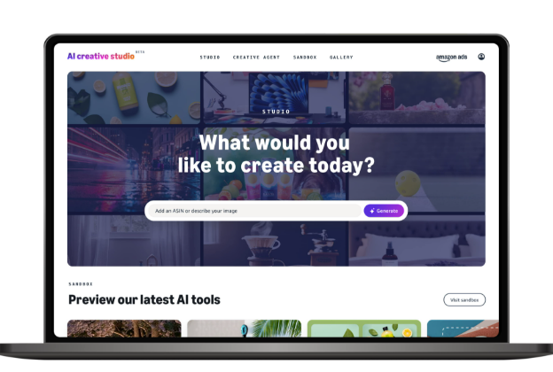
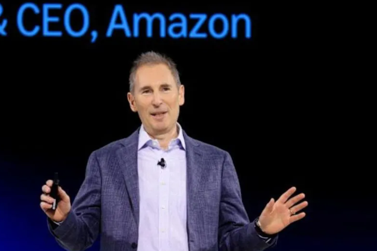
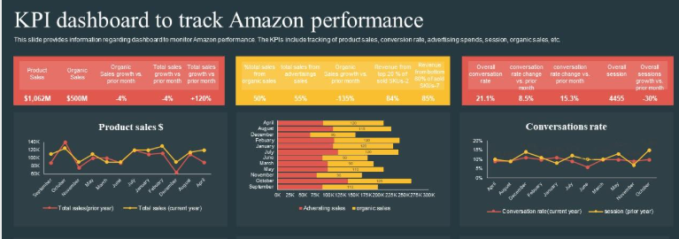

Jeszcze osiemnaście miesięcy temu dobry specjalista od Amazon Ads był osobą, która umiała ręcznie żonglować bidami, czytać raporty Search Term Report, znała na pamięć logikę Top of Search i potrafiła w piątkowy wieczór wytłumaczyć, dlaczego ACoS skoczył w środę o trzy punkty. To była zawodowa wiedza, której nie dawało się sklonować z YouTube'a w jeden weekend, i właśnie dlatego dobrzy ludzie od PPC zarabiali tak, jak zarabiali.
Dziś ta sama wiedza zaczyna powoli przypominać umiejętność prowadzenia samochodu z manualną skrzynią biegów. Wciąż piękna, wciąż użyteczna, wciąż chętnie kupowana przez koneserów, ale coraz częściej zbędna w samochodzie, który sam zna trasę i sam zna kierowcę. Amazon w ciągu jednego roku, mniej więcej między CES 2025 a Cannes Lions 2025, przestawił swój ekosystem reklamowy na zupełnie inny silnik. Nie pisze się o tym w komunikatach prasowych krzyczących wielką czcionką, bo Amazon zwykle nie lubi wielkich ogłoszeń, woli zmieniać świat pod osłoną ciszy. Ale jeśli zerkniesz na to, co rzeczywiście dzieje się w Ad Console, w Performance+, w kreacjach generowanych przez Project Nova i w nowych Sponsored Prompts wbitych w paseczek czatu Rufusa, dostaniesz obraz reklamowego marketplace'u, który w niczym już nie przypomina tego, w którym pracowaliśmy w 2023.
To nie jest tekst na cześć AI. Jest raczej próbą inwentaryzacji: co się właściwie zmieniło, ile to kosztuje, jakie liczby już mamy z pola walki, i co z tym wszystkim ma teraz zrobić sprzedawca w Polsce, który ma dziesięć ASIN-ów w Niemczech i jeden czerwony alert na koncie, że jutro koniec budżetu.
Sześć frontów, na których AI rozmontowało reklamę
Zamiast jednej rewolucji dostaliśmy sześć równoległych. Kilka z nich jest oczywistych nawet dla kogoś, kto loguje się do Ad Console raz w tygodniu, kilka jest na tyle subtelnych, że można je przeoczyć i potem się dziwić, dlaczego budżet zachowuje się dziwnie. Idąc po kolei: Amazon AI Creative Studio z całą rodziną generatorów, Performance+ dla brandów na DSP, Sponsored Brands Product Collections w nowej, automatycznej odsłonie, beta budgetowego auto-bidu w Sponsored Products, Rufus Sponsored Prompts jako nowy płatny format CPC w samym czacie, i wreszcie cały AMC z Ads Agentem, który pozwala dziś budować audiencje pisząc do AI po angielsku, a nie składając SQL z dokumentacji.
Każdy z tych frontów rządzi się swoją logiką, swoimi kosztami i swoimi pułapkami. I niemal każdy ma już pierwsze twarde dane z 2025 roku, które albo go ratują, albo pogrzebały, zanim zdążyliśmy go polubić.
AI Creative Studio, czyli koniec drogich sesji zdjęciowych
Najbardziej spektakularna i jednocześnie najbardziej namacalna zmiana ze wszystkich. Amazon AI Creative Studio wyszedł z bety w drugiej połowie 2025 roku, jest darmowy, wbudowany wprost w Ad Console i napędzany rodziną modeli Project Nova - własnych foundation models Amazona, mającymi konkurować z OpenAI. Nazywanie go "kolejnym generatorem obrazów" jest tu trochę nie na miejscu, bo Nova nie generuje generycznych ładnych zdjęć, tylko kreacje wytrenowane na bilionach sygnałów zakupowych z wnętrza Amazona. Innymi słowy - to nie jest narzędzie do robienia "obrazków pasujących do brandu", to jest narzędzie do robienia obrazków, które konwertują, bo model wie, co konwertuje.

Andy Jassy przy okazji Cannes Lions 2025 opisał tę magię w jednym zdaniu: zamiast pokazywać zegarek leżący na biurku, możesz wziąć zwykłe zdjęcie produktu i pozwolić AI animować je tak, żeby zegarek pojawił się na czyimś nadgarstku w ruchu. Nie jest to przy tym tylko marketingowa demonstracja - agencje takie jak Sequence Commerce raportują, że kreacje generowane w Studio osiągają nawet o czterdzieści procent wyższy CTR niż ich ręcznie produkowane odpowiedniki, i pozwalają brandom uruchamiać o osiemdziesiąt osiem procent więcej kampanii w tym samym czasie i budżecie.

Do tego doszedł w pierwszym kwartale 2026 roku Creative Agent, czyli zwykły czat, do którego mówisz: "Zrób mi premium piętnastosekundowe wideo Sponsored Brand do moich karm dla psów, celowane w właścicieli zdrowotnie świadomych" i Agent składa ci kampanię od koncepcji do gotowych assetów. Brzmi jak demo z konferencji, jest niestety codziennością, w której właśnie żyjemy. Przekonujący wniosek z tego wszystkiego jest taki, że jeśli wciąż płacisz agencji tysiąc euro za pojedynczy lifestyle shot, w którym dziewczyna trzyma w dłoni twoje serum, to płacisz za wartość, którą Amazon oddaje dziś za darmo. To nie znaczy, że agencje są zbędne. To znaczy, że ich rola przesuwa się z produkcji w stronę kuratorstwa.
Performance+, czyli kiedy AI naprawdę umie targetować lepiej od ciebie
To nowy format kampanii dla brandów korzystających z Amazon DSP, który Amazon nazywa "predykcyjnym" i opisuje jako swoje najlepsze AI w aktualnej generacji. Działa to w sposób, który dla starego optymalizatora brzmi jak kapitulacja: nie ustalasz żadnych szczegółów, nie tworzysz audiencji, nie definiujesz okien czasowych. Wrzucasz cel biznesowy i własne sygnały, a Performance+ miksuje je z ekskluzywnymi danymi konsumenckimi Amazona i samodzielnie buduje to, co Amazon nazywa "bespoke predictive audiences". W praktyce algorytm scoruje każdą bid w czasie rzeczywistym, próbując oszacować, czy konkretny człowiek na Prime Video albo na amazon.com kupi w najbliższych dniach to, co reklamujesz.

To wszystko brzmiałoby jak kolejne PR-owe obietnice, gdyby nie Fiverr. Fiverr testował Performance+ jako jeden z pierwszych dużych brandów spoza klasycznego e-commerce'u i opublikował wyniki, które warto sobie zapisać: sześćdziesiąt sześć procent niższe CPA, siedemdziesiąt dwa procent wyższy CTR, a w skali całego portfolio Amazonu Ads agencja raportuje średnio pięćdziesiąt jeden procent poprawy w koszcie pozyskania klienta dla brandów, które przeszły na Performance+. To są liczby, które kasują dyskusję o tym, czy AI dobrze targetuje. Tak, dobrze. Nie zawsze, nie w każdej kategorii, ale w średniej z wystarczająco dużej próby - lepiej niż ręczna konfiguracja w narzędziu, w którym mamy do dyspozycji kilkanaście pól.
W listopadzie 2025 Amazon dorzucił do tego coś, co nazywa "glass-box AI" - czyli przejrzyste karty Insightów, które tłumaczą, dlaczego algorytm podjął konkretną decyzję optymalizacyjną. Z jakiej cechy demograficznej, z jakim historycznym time-to-convert, z jakim wyborem kanału. To nie jest kosmetyczna zmiana, to jest istotny ukłon w stronę advertiserów, którzy przez rok narzekali, że nie wiedzą, co algorytm robi z ich pieniędzmi. Z perspektywy zaufania - ważniejsze niż same liczby Fiverra.
Sponsored Products na auto-bidzie, czyli pułapka, która wygląda jak prezent
Tu robi się ciekawiej, bo nie wszystko, co Amazon podaje pod sztandarem AI, jest dobre dla wszystkich. Na początku 2026 roku Amazon zaczął betatestować nową opcję bidowania w Sponsored Products, którą można nazwać "automatyczna optymalizacja ROAS w ramach budżetu". W praktyce wygląda to tak, że przestajesz ustawiać bidy. Przestajesz ustawiać target ROAS. Przestajesz ustawiać multiplikatory placementów. Ustawiasz wyłącznie dzienny budżet, a algorytm Amazona w stu procentach przejmuje decyzje cenowe w czasie rzeczywistym, na każdej aukcji z osobna.
Dla dojrzałych ASIN-ów z głęboką historią konwersji, stabilnym performance i przewidywalną sezonowością - rzecz wygodna i wydajna, oszczędza tygodnie ręcznej pracy i potrafi wygrzebać marżę w miejscach, w których człowiek nie miałby cierpliwości szukać. Dla wszystkiego nowego - klasyczna pułapka. Bo skoro algorytm dyktuje bid, to ty tracisz możliwość wymuszenia placementu Top of Search, który jest absolutnie kluczowy w pierwszych tygodniach launchu, kiedy musisz zbudować ranking organiczny i zalać produkt impressions za każdą cenę. Algorytm tej logiki jeszcze nie rozumie, bo myśli wyłącznie kategoriami efektywności, a launch nie jest efektywny - launch jest inwestycją.
Praktyczna zasada brzmi więc tak: zostaw ROAS auto-bidding dla starszych, ustabilizowanych produktów, gdzie chcesz po prostu wycisnąć maksimum efficiency z dojrzałego portfela. Dla wszystkiego, co ma mniej niż sześć miesięcy historii, trzymaj się manualnych ustawień. To jedna z tych sytuacji, w których zaufanie AI dosłownie kosztuje rankingi, a rankingów nie odzyska się żadną optymalizacją po fakcie.
Sponsored Brands Product Collections, czyli koniec ręcznej kuracji
Po cichu, bez specjalnego ogłoszenia, w styczniu 2026 Amazon przebudował format Sponsored Brands Product Collections, który dotąd był jedną z ostatnich oaz ręcznego rzemiosła reklamowego. Sprzedawcy używali go do precyzyjnego dobierania produktów do kampanii i pisania własnych nagłówków odpowiadających konkretnej grupie szukających. Po przebudowie wymagane jest minimum trzech do dziesięciu ASIN-ów w jednej kreacji, a o tym, które z nich faktycznie zobaczy konkretny shopper, decyduje już AI, na podstawie predykcji jego zachowań zakupowych. Nie ty, nie twój manager, nie agencja. Algorytm.
Reakcje branży są podzielone i, szczerze mówiąc, słusznie. Dla brandów z szerokim portfolio i wieloma wariantami ten sposób może działać świetnie, bo pozwala dynamicznie dopasowywać ofertę do różnych segmentów bez konieczności klonowania kampanii. Dla brandów z wąskim portfolio i precyzyjnie skonstruowanym storytellingiem - to jak wpuszczenie kogoś obcego do twojego storefrontu, żeby przesuwał meble. Tu naprawdę warto zrobić własny test, zanim cokolwiek się powie, bo wynik zależy od kategorii, kraju i konkretnego produktu, a nie od ogólnej teorii.
Rufus Sponsored Prompts, czyli najtańszy CPC w internecie i prawie zero wolumenu
Najbardziej intrygujący ze wszystkich nowych formatów wyszedł z bety 25 marca 2026 roku i działa już dziś jako pełnoprawny kanał reklamowy. Rufus Sponsored Prompts to płatne podpowiedzi, które pojawiają się w samym czacie z asystentem - kupujący widzi sugerowany prompt w stylu "Czy [twój brand] ma opcję bez cukru?", klika i trafia w kontekst rozmowy z Rufusem, gdzie twój produkt jest częścią odpowiedzi. Wszystkie aktywne kampanie SP i SB zostały automatycznie zapisane do tego formatu, więc nawet jeśli nie wiedziałeś, że istnieje, prawdopodobnie już z niego korzystasz.
I tu dopiero zaczyna się ciekawie. Brytyjski brand Paladone, który był jednym z pierwszych poważnych testerów, opublikował dane z pierwszego kwartału 2026 i są one tak skrajne, że trzeba je przeczytać dwa razy. Paladone w tym samym czasie, na tych samych produktach, zarobił pięćset tysięcy kliknięć z klasycznych kampanii Sponsored Products i zaledwie osiemdziesiąt osiem kliknięć z Rufus Sponsored Prompts. Wolumen jest więc, jak by to powiedzieć dyplomatycznie, śladowy. Ale jest jeszcze druga strona równania: średni CPC w Rufus Sponsored Prompts wynosił u Paladone'a około trzydzieści jeden centów, podczas gdy klasyczny CPC bił w siedemdziesiąt centów. Konwersja? Te osiemdziesiąt osiem kliknięć konwertowało się dramatycznie wyżej, bo użytkownik, który już rozmawia z Rufusem, jest o sześćdziesiąt procent bardziej skłonny do zakupu niż użytkownik z klasycznego search.
Co z tego wynika dla zwykłego sprzedawcy? Nie chodzi tu jeszcze o wolumen, tylko o dane. Rufus Sponsored Prompts to dziś najtańsza, najszybsza i najbardziej legalna metoda dowiedzenia się, jakie pytania kupujący zadają o twój produkt w naturalnym języku. Wydaj na nie pięćset dolarów na pięciu top ASIN-ach, ściągnij Search Query Report, zobacz dokładnie, jakie konwersacyjne pytania wyzwoliły twoje reklamy - i wykorzystaj te zdania jako materiał wsadowy do przepisania bullet pointów, A+ Content i sekcji Q&A. To jest w gruncie rzeczy najtańsze badanie zachowań kupujących, jakie kiedykolwiek było dostępne na Amazonie.
A co z polskim sprzedawcą w tym całym karnawale
Tu jest bardzo dobra wiadomość, której na ogół nie spodziewamy się od Amazona, kiedy tematem jest Polska. Po raz pierwszy od wielu lat Amazon nie traktuje rynku polskiego jak rynku drugiej kategorii, do którego nowości docierają z dwunastomiesięcznym opóźnieniem. Performance+, AMC z Ads Agentem, glass-box reporting i Unified Conversion Path są w Polsce dostępne od pierwszego dnia, na tych samych warunkach co w Niemczech czy Wielkiej Brytanii. To kolosalna zmiana, bo oznacza, że polscy sprzedawcy mogą dziś korzystać z enterprise'owych narzędzi, na które wcześniej trzeba było zatrudniać data analystów ze znajomością SQL.
Jest jednak druga strona medalu. AI Creative Studio jest na rynku polskim w trybie ograniczonego dostępu, w jednym koszyku z Holandią i Belgią. Polscy sprzedawcy mają dziś dostęp do podstawowych funkcji generowania obrazów, ale zaawansowane multi-format Creative Agent funkcje wciąż są dla rynku PL w fazie beta. Praktyczne workaroundy, jeśli sprzedajesz cross-border, to logowanie się do narzędzia przez portal niemiecki albo brytyjski - tam masz pełną wersję, a wyniki możesz wykorzystywać na wszystkich rynkach.
Druga rzecz, o której wstydliwie się milczy, ale która jest istotna dla każdego, kto produkuje reklamy w języku polskim. AI generujące copy w językach Tier 1 - niemieckim, francuskim, hiszpańskim, włoskim - jest dziś świetne. Produkuje teksty, które brzmią jak napisane przez native speakera z dobrym wyczuciem branży. AI generujące copy w języku polskim, niestety, nadal kuleje - polskie deklinacje, koniugacje, aspekty czasowników i ogólna gramatyczna karuzela są dla modelu po prostu trudniejsze do okiełznania niż prosta angielska składnia. Praktycznie oznacza to, że jeśli generujesz polskie nagłówki Sponsored Brands przez AI, musisz je przeczytać i poprawić ręcznie, zanim opublikujesz. Nie ma tu jeszcze drogi na skróty.
Co właściwie z tym wszystkim zrobić w tym miesiącu
Jeśli chcesz wyjść z tego tekstu z konkretnym planem działania, a nie tylko z listą nowych terminów do wyguglowania, weź ten:
- Włącz Performance+ dla wszystkich brandów, które mają dostęp do DSP i jakikolwiek sensowny budżet mediowy. Liczby Fiverra są na tyle przekonujące, a fakt, że Polska ma pełen dostęp od dnia pierwszego, na tyle wyjątkowy, że nieskorzystanie z tego okna jest dziś po prostu marnowaniem przewagi konkurencyjnej.
- Wejdź do AI Creative Studio nawet jeśli nie masz w planach wymiany całej grafiki. Wygeneruj sobie pięć lifestyle wariantów dla swoich top 3 ASIN-ów, wrzuć je w A/B test ze starymi kreacjami, zobacz różnicę. Jeśli okaże się, że nowe konwertują lepiej, masz darmowy upgrade. Jeśli starsze zostały, masz pewność, że twój zespół kreatywny wciąż dowozi.
- Zostaw nową betę ROAS auto-bidu w spokoju przy launchu nowych produktów. Używaj jej tylko dla dojrzałych ASIN-ów z głęboką historią, nigdy w pierwszych trzech do sześciu miesięcy życia produktu. To jest pułapka, która nie wygląda na pułapkę, dopóki nie stracisz rankingu.
- Wydaj kontrolowane pięćset dolarów na Rufus Sponsored Prompts na swoich pięciu najmocniejszych ASIN-ach. Nie chodzi o wolumen, chodzi o to, żeby zobaczyć w Search Query Report, jakimi pytaniami konwersacyjnymi kupujący docierają do twojego produktu. To jest najtańsza ankieta klientów, na jaką kiedykolwiek wpadniesz.
- Jeśli masz ogarnięty zespół data, wejdź w AMC Ads Agent i zacznij budować audiencje przez język naturalny. Pierwsze, co zrób: użytkownicy, którzy widzieli twoją reklamę DSP w ostatnich trzydziestu dniach, ale nie kupili. Druga: kupujący twojego konkurenta, którzy ostatnio przeglądali twoją kategorię. Te dwie grupy pokażą ci, jak działa nowy AMC, i prawie zawsze są mocno niedopalonym potencjałem.
- Polskie copy generowane przez AI - zawsze przepuszczaj przez ludzkie oko. Niemieckie, francuskie, włoskie, hiszpańskie zwykle nie wymagają poprawek poza drobnymi szlifami. Polskie wymagają redakcji. Dopóki Amazon tego nie naprawi, traktuj generator jako szybki pierwszy draft, nie jako gotowy produkt do publikacji.
Najtrudniejsze w tym wszystkim nie jest poznanie nowych narzędzi - bo każde z nich ma już setki tutoriali na YouTubie i ćwierć miliona postów na LinkedIn. Najtrudniejsze jest pogodzenie się z tym, że logika, którą doszlifowałeś przez ostatnie pięć lat, przestaje być twoją przewagą konkurencyjną. Performance+ targetuje lepiej niż ty, AI Creative Studio robi grafiki szybciej niż ty, ROAS auto-bidding optymalizuje ASIN-y, których nie ruszałbyś pewnie z lenistwa. Nie ma sensu z tym walczyć, bo to jest walka, której nie da się wygrać.
Sens jest w czymś innym. Sens jest w tym, żeby przesunąć siebie samego z roli operatora w rolę reżysera. AI nie wie, czy twoja marka chce być postrzegana jako premium czy jako value-for-money. AI nie wie, że twój launch zaplanowany na czerwiec musi koniecznie wyprzedzić launch konkurenta zaplanowany na maj. AI nie wie, że masz na magazynie sześć tysięcy sztuk, które trzeba sprzedać do sierpnia, bo inaczej pójdą jako stranded inventory. To wszystko wciąż siedzi w głowie sprzedawcy, i w 2026 roku to właśnie ta wiedza jest tym, co dzieli marki, które rosną od tych, które stoją w miejscu.
Najczęstsze pytania
Czy Performance+ jest dostępny dla polskich sprzedawców?
Tak, od pierwszego dnia, na tych samych warunkach co w Niemczech czy UK. Polska po raz pierwszy nie jest rynkiem drugiej kategorii w kontekście wdrożeń enterprise'owych narzędzi reklamowych Amazona. Wymaga konta z dostępem do DSP i sensownego budżetu mediowego.
Czy mogę używać ROAS auto-bidding przy launchu nowego produktu?
Nie. Auto-bid jest zaprojektowany pod efficiency, a launch to inwestycja, nie efficiency. Algorytm nie wymusi placementu Top of Search, który jest krytyczny w pierwszych tygodniach do zbudowania rankingu organicznego. Trzymaj manualne ustawienia przez pierwsze 6 miesięcy życia produktu.
Ile kosztuje Alexa for Shopping Sponsored Prompts (dawniej Rufus Sponsored Prompts) i czy są warte budżetu?
Średni CPC wynosił u testerów (case Paladone, Q1 2026) około 31 centów - ponad dwukrotnie taniej niż klasyczne ~70 centów. Wolumen jest jednak śladowy (88 kliknięć vs 500 000 z klasycznego SP w tym samym okresie). Sens to dziś nie skalowanie sprzedaży, tylko najtańszy sposób na zobaczenie, jakimi konwersacyjnymi pytaniami kupujący docierają do produktu - ~500 USD na 5 top ASIN-ach plus analiza Search Query Report.
Czy AI Creative Studio dobrze radzi sobie z polskim copy?
Niestety nie. AI generujące copy w Tier 1 (DE/FR/ES/IT) brzmi jak native speaker. Polski - jeszcze nie. Polskie deklinacje, koniugacje i aspekty czasowników są dla modelu trudniejsze. Każdy polski headline wygenerowany przez Studio musisz przeczytać i poprawić ręcznie przed publikacją.
Od czego zacząć z AI w Amazon Ads, jeśli mam ograniczony czas?
Trzy ruchy w tej kolejności: (1) włącz Performance+ jeśli masz dostęp do DSP - liczby Fiverra (66% niższy CPA, 72% wyższy CTR) usprawiedliwiają test bez dyskusji; (2) wygeneruj 5 wariantów lifestyle w AI Creative Studio dla top 3 ASIN-ów i wrzuć w A/B test ze starszą kreacją; (3) wydaj kontrolowane 500 USD na Alexa for Shopping Sponsored Prompts na 5 najmocniejszych ASIN-ach. To trzy rzeczy, które dają konkret bez ryzyka utraty rankingów.

13 lat na Amazonie, 22 lata w e-commerce, 3 marki własne. Konsultant i edukator - pomagam sprzedawcom budować rentowne biznesy na Amazon FBA. Poznaj mnie bliżej.
Chcesz przestawić swoje Amazon Ads na AI bez chodzenia po polach minowych?
Mogę przeprowadzić cię przez Performance+, AI Creative Studio i nowe formaty CPC tak, żebyś nie wpadł w pułapki, w które wpadli pierwsi testerzy. Napisz do mnie.
Napisz do mnie